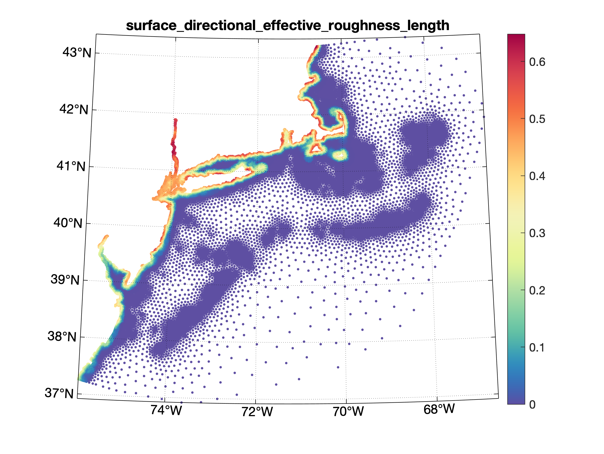
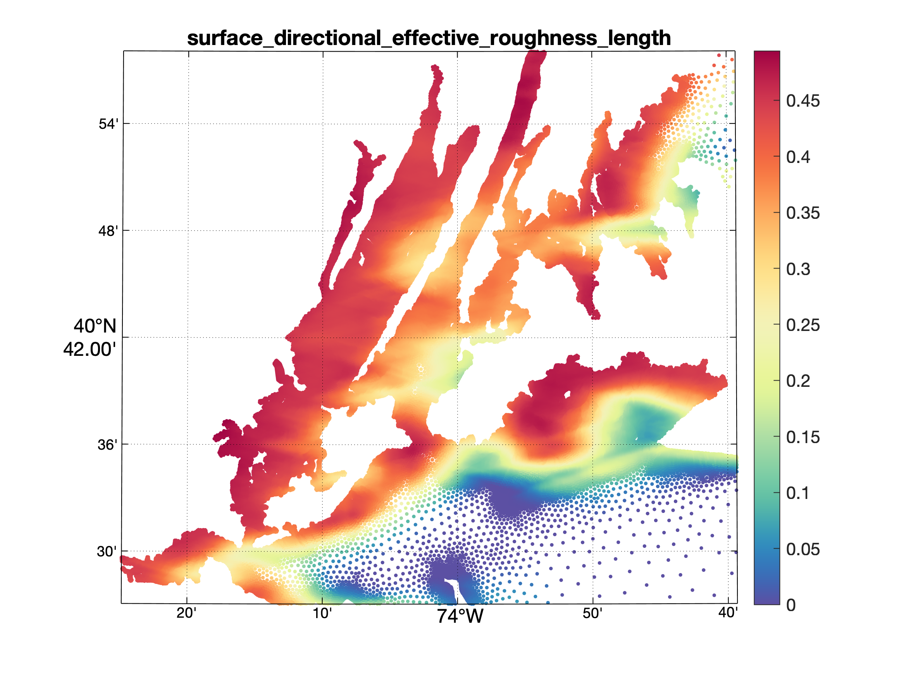

Example usage provided by Keith Roberts
Prerequisites
- Land use data, example: CCAP
- mesh file
- fort13 file which contains the nodal attribute
surface_directional_effective_roughness_length
m
12
0.0 0.0 0.0 0.0 0.0 0.0 0.0 0.0 0.0 0.0 0.0 0.0
surface_directional_effective_roughness_length
0
- Lookup Table (optional) - This is a table mapping land use class integers to values. If your raster already has values embedded, you can skip this
2 0.500 :High Intensity Developed
3 0.390 :Medium Intensity Developed
4 0.500 :Low Intensity Developed
5 0.330 :Developed Open Space
6 0.060 :Cultivated Land
7 0.060 :Pasture/Hay
8 0.040 :Grassland
9 0.650 :Deciduous Forest
10 0.720 :Evergreen Forest
11 0.710 :Mixed Forest
12 0.120 :Scrub/Shrub
13 0.550 :Palustrine Forested Wetland
14 0.110 :Palustrine Scrub/Shrub Wetland
15 0.110 :Palustrine Emergent Wetland
16 0.550 :Estuarine Forested Wetland
17 0.120 :Estuarine Scrub/Shrub Wetland
18 0.110 :Estuarine Emergent Wetland
19 0.090 :Unconsolidated Shore
20 0.090 :Bare Land
21 0.001 :Open Water
22 0.040 :Palustrine Aquatic Bed
23 0.040 :Estuarine Aquatic Bed
Building and Setup
The code can be compiled to use the ADCIRCModules library using the following:
g++ -I /usr/local/include/adcircmodules/ -ladcircmodules -std=c++14 directional_wind_reduction.cpp -o directional_wind_reduction
Note that the actual location of your include files may vary depending on your installation
You may want to test the code using only a few nodes at first. This can be done by turning of the interpolation flags as shown in the below c++ example. Because this calculation is time intensive, it is better to discover errors in your setup earlier than later. Note that this calculation can be performed using parallel processing (OpenMP) if it was enabled at compile time.
The land use raster data should be in a meters based coordinate system. While many other processes in ADCIRCModules are agnostic, this process requires the use of a meters based coordinate system. I typically use UTM. You can convert data to the coordinate system using GDAL.
gdalwarp -t_srs ESPG:21918 source.tif output.tif
With these steps complete, you can run your executable. A progress bar will show the progress and (if using a terminal) estimated time remaining.
Output
When complete, you can use the OceanMesh project scripts to visualize your data.
m = msh('fname','fort.14','aux',{'myfort.13'});
plot(m,'type','dir','proj','lamb');
The output will look something like: Note that by default it plots the infinity norm at each point (the largest directional wind stress reduction at each node of the grid).


There is an equivalent python example provided here
3 import pyadcircmodules
as pa
5 m = pa.Mesh(
"ms-riv.grd")
6 n = pa.NodalAttributes(
"ms-riv.13")
11 m.defineProjection(4326,
True)
13 idx = n.locateAttribute(
"surface_directional_effective_roughness_length")
15 r = pa.Griddata(m,
"ccap_conus_2016_landcover2.tif",26915)
16 r.setShowProgressBar(
True)
17 r.readLookupTable(
"CCAP_DWind.table")
18 r.setInterpolationFlags(pa.Average)
20 dw = r.computeDirectionalWindReduction(
True)
22 for i
in range(m.numNodes()):
23 n.attribute(idx,i).setValue(dw[i])
#include <iostream>
#include <memory>
int main() {
auto m = std::make_unique<Mesh>("../binera25m_wFP_tide_only.14");
m->read();
m->defineProjection(4326, true);
auto fort13 = std::make_unique<NodalAttributes>(
"../binera25m_wFP_tide_only.13", m.get());
fort13->read();
auto midx2 =
fort13->locateAttribute("surface_directional_effective_roughness_length");
auto g = std::make_unique<Griddata>(m.get(), "consu_epsg26918.tif", 26918);
for (auto i = 0; i < m->numNodes(); ++i) {
if (i < 50) {
} else {
}
}
g->setShowProgressBar(true);
g->readLookupTable("../CCAP_DWind.table");
g->setRasterInMemory(false);
auto r = g->computeDirectionalWindReduction(true);
for (auto i = 0; i < m->numNodes(); ++i) {
fort13->attribute(midx2, i)->setValue(r[i]);
}
fort13->write("../binera25m_wFP_w_dir_ws.13");
return 0;
}
 1.8.13
1.8.13